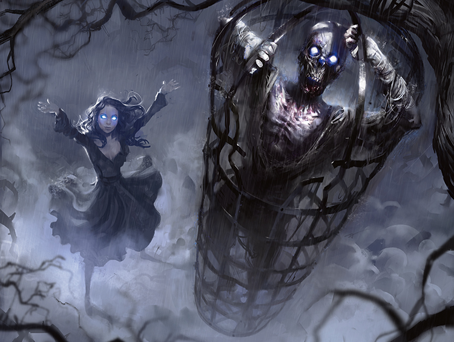
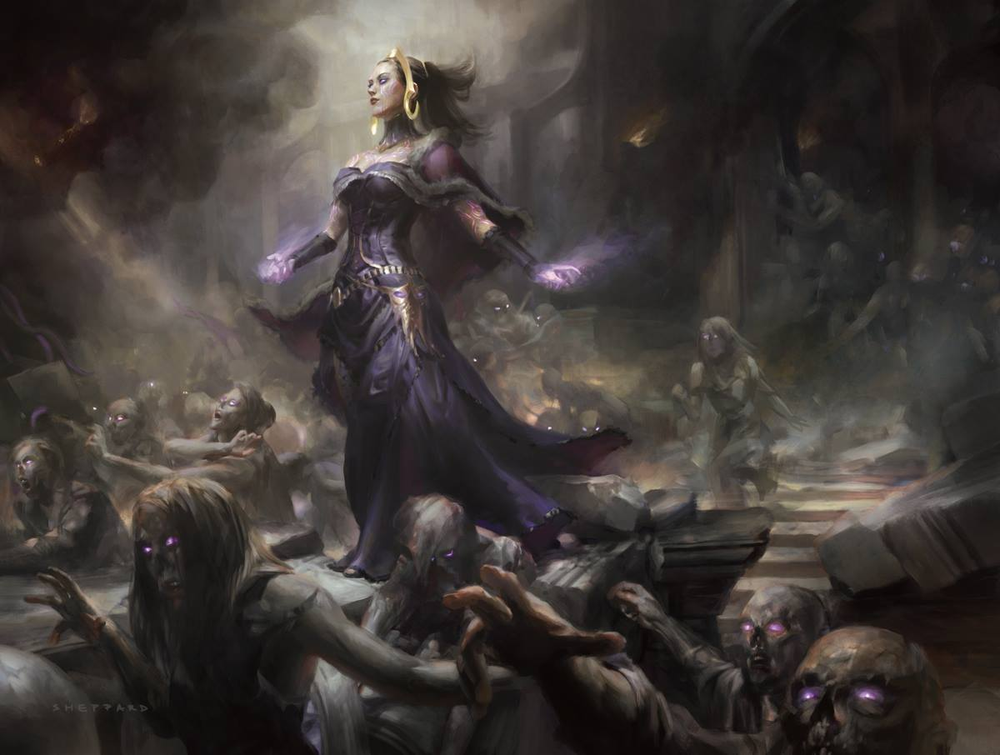
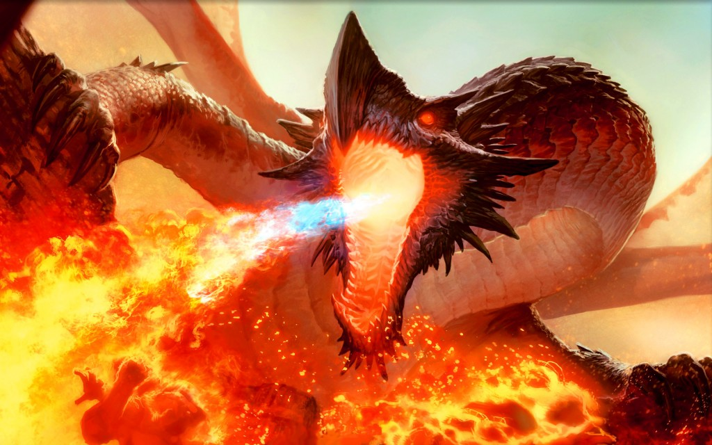
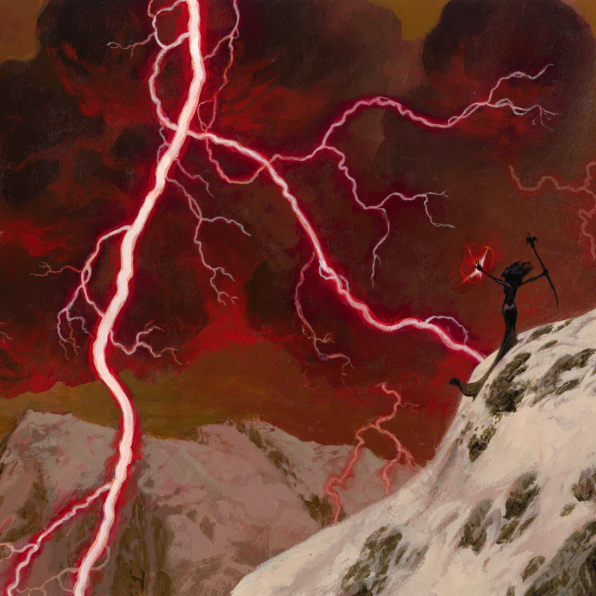
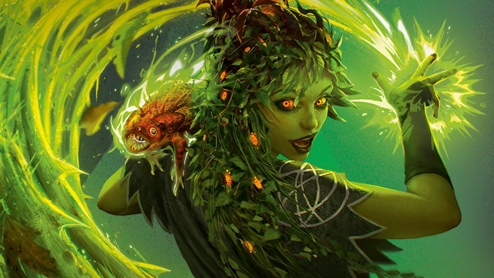

White

Common creature types: Angel, Soldier, Knight, Halfling, Human, Cat
Basic Land Type: Plains
White is the color about altruism. This color is all about the good of the group. Unity! Together we are STRONG! White mages are known for creating massive armies, gaining life, and wielding powerful equipment.
This color is a perfect fit for players who like controlling and managing large armies of creatures.


Blue

Common Creature Types: Merfolk, Wizard, Sphinx, Kraken, Leviathan, Artificer
Basic Land Type: Island
Blue is the color of mental trickery. Blue mages use their magic to help them in their pursuit of their quest for unsatiable knowledge. For a blue mage, knowledge is power! Blue magic is used to draw cards
, counter spells, and all sorts of weird ways to mess with your opponent's cards. This is the color for the people who enjoy messing with their opponent's heads. (and battlefield!)


Black
Common Creature Types: Zombie, Skeleton, Demon, Rat, Vampire, Horror
Basic Land Type: Swamp
Black is the color of ambition. Black magic is used to secure a victory...by any means necessary! Black mages are known for sacrificing their creatures, paying life, and discarding cards for big pay offs.
That's alright though, black is the color of necromancy. Things you sacrifice for your ideal greater good often aren't gone for long!


Red

Common Creature Types: Dragon, Goblin, Minotaur, Warrior, Devil, Shaman
Basic Land Type: Mountain
Red is color of red-hot FIERY passion! A color of emotional impatience, red magic is explosive! Fast! Lightning quick! Red magic is used to kill opponents quickly before they even have a chance to think.
Lots of damage, creatures that attack right away, and powerful cheap spells. Just be careful, don't burn yourself out of recourses too quickly...Red is the perfect color for the player that values action over strategy.


Green
Common Creature Types: Elf, Beast, Treefolk, Druid, Elemental, Fungus
Basic Land Type: Forest
Green is the color of growth. Respecting tradition, and understanding that good things come to those who wait. And those things are BIG CREATURES. Green mages specialize in generating lots of mana, which
is then in turn used for summoning giant beasts and monsters to fight for your side. This is the color for those that like to play massive monsters!


Now that you've seen all five colors, which one is your favorite? Your magic deck can contain any number of colors, but the more colors you add, the harder it is to cast your spells.
Starting with a one or two color deck is what I recommend.
*----------Good luck! Happy casting.----------*